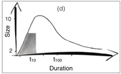
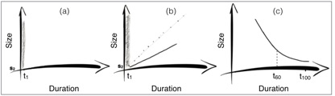

Detecting Human Encounter

The sociologist such as Goffman and many others have studied human behaviour through observations for many decades. Many examined and defined human face-to-face interactions.
For example, Goffman in his “Behaviour in public places”, defined the term encounter as “all those instances of two or more people in a situation joining each other openly in maintaining a single focus of cognitive and visual attention, entailing preferential communication rights”.
We as technologists and scientists sometimes forget the amount of useful observations and insights that the sociologists offer. In our recent work, my colleagues and I revisited some of Goffman findings and used them to create a model for human encounter which could be detected using simple colocation technology without the need of invasive sensing technology (e.g., monitoring conversations or sound).
We achieved that based on two simple parameters of size and the duration of the encounter. Simply put we know that for a meaningful conversation the duration needs to be at least 1 minute long (a), and based on “ceremonial rituals” observations from sociologist we know that as the size of the group increases the duration increases sub-linearly(b). This means, for example, while a two minute encounter for 2 persons could be long enough for a social chat, a 5 persons encounter might require more than 5 minutes. And finally, as the duration increases the likelihood of encounter between a large group of people decreases.
Putting these three simple concepts in to a model we expect human encounters to fit a log normal distribution (d), and if they do follow such distribution we can then apply similar reasoning to detect those short-lived spontaneous encounters.

In our paper, we show how we tested this model on an enterprise dataset, and how we deployed a system which leverages WiFi signals from ordinary phones (with no need for specific applications) to detect encounters in a field study in our offices.
Friday, 9 October 2015

Paper